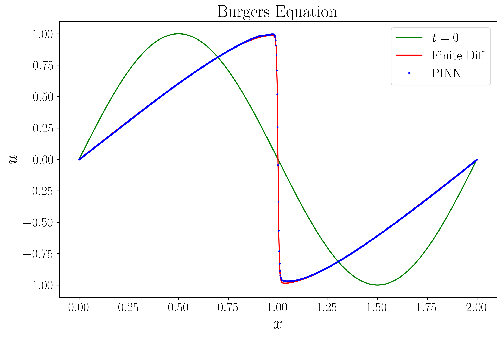
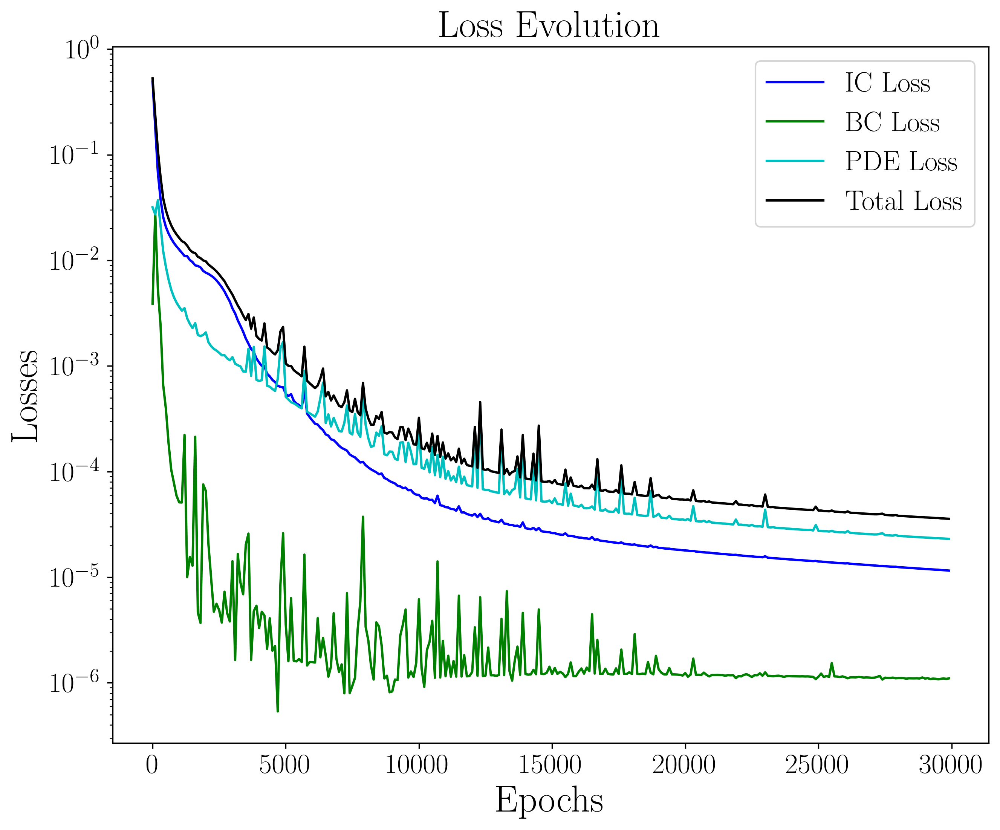

Machine Learning
Physics Informed Neural Network
Physics Informed Neural Network (PINN) is a recent development in the field of machine learning. It combines the power of neural networks with the physical constraints of the problem.
A PINN is simply a supervised learning problem where the loss function includes the physical constraints of the problem. For example, in a fluid dynamics problem, the loss function can include the Navier-Stokes equations as well as appropriate boundary conditions.
PINN Example
Burger's equation: $$ \frac{\partial u}{\partial t} + u\frac{\partial u}{\partial x} = \nu \frac{\partial^2 u}{\partial x^2} $$
This is a nonlinear PDE that comes up in several areas of mathematics, including fluid dynamics, nonlinear acoustics, etc. The main feature of this equation is that it often leads to the formation of a shock wave.
Burger's Equation
We can set up a very simple algorithm to solve the Burger's equation using finite difference method: $$ u_i^{n+1} = u_i^n - u_i^n\frac{u_{i+1}^n - u_{i-1}^n}{2\Delta x}\Delta t + \nu \frac{u_{i+1}^n - 2u_i^n + u_{i-1}^n}{\Delta x^2}\Delta t $$
This is essentially the FTCS method adapted to this equation. Unlike the advection equation, this is stable as long as CFL condition is satisfied, due to the diffusion term.
Burger's Equation
We choose a simple initial condition: $u(x) = \sin(\pi x)$, with Dirichlet boundary conditions at $x=0$ and $x=2$, $u(0) = u(2) = 0$. The viscosity $\nu$ is chosen to be $\nu = 0.01/\pi$.

Burger's Equation
Applying the FTCS scheme to evolve the equation, we obtain the solution at $t = 0.48$:

A shock spontaneously forms near $t\approx 0.5$.
PINN
Now we want to construct a neural network to solve this equation. The network I construct is very simple: it has 4 layers with sizes 32, 64, 64, 32.
I choose $\tanh(x)$ as my activation function. Others may also work, but it's a matter of trial and error.
PINN
In order to train the network, we need to define a loss function to minimize. The standard method is to define several loss functions representing different parts of the problem, then adding them together: $$ \mathrm{Loss} = L_\mathrm{PDE} + L_\mathrm{IC} + L_\mathrm{BC} $$
PINN Results
After about 5 minutes (!) of training on my RTX 3090, the result is the following:
PINN Results
This is the evolution of the different components of the loss function:
